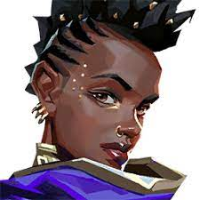
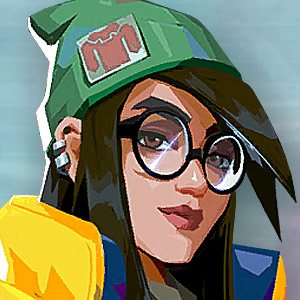

This landing page was made as a part of my Foundations course in The Odin Project. It is still a work in progress and I will likely return to this website to style it further with JavaScript. Stay tuned!
My favorite agents in Valorant
She's a staple pick on Icebox and her hybrid nature fits my playstyle.

Same deal as Viper but I much prefer her on maps with narrow choke points.

Allows me to nerd out with lineups and her ult allows for an easy site take/retake.
Great lurking capabilities but his skill ceiling is much higher than Killjoy.
We rip out so much of ourselves to be cured of things faster than we should that we go bankrupt by the age of thirty and have less to offer each time we start with someone new. But to feel nothing so as not to feel anything - what a waste!
-Andre Aciman, author
Subscription
Subscribe to our newsletter to receive updates on our new posts. Click the button over there!